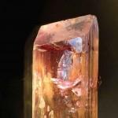

Music Reviews
-

OFF! OFF!
A quick burst of turmoil and angst 1978 style is a good way to start the day, so get out that Black Fla--wait, OFF!? ...It's over already? And it's a NEW band? Yes, but more than that, they're worth your time.
Forrest Cardamenis hits the switch -

Small Faces Small Faces, et al
No need to read our review - buy this!
Alan Shulman reviews... -

Allo Darlin' Europe
Following the success of their 2010 self-titled debut, London-based four-piece Allo Darlin' have beefed up their sound for album number two. So, how do you feel about Europe?
Joe Rivers is feeling continental... -

Mariee Sioux Gift for the End
Mariee Sioux is another one of those beautifully sensitive folk singers, just like... [insert name of critically respected, cult-y singer-songwriter here]. But what she lacks for in distinctiveness, she more than makes up for in spookiness.
Mark Davison is enchanted, and disturbed... -

PS I Love You Death Dreams
The Ontario noise-rock duo just emanates with raw emotion on Death Dreams, beefing up on their thrilling Meet Me a Muster Station with an adherence to classic rock histrionics and more indelible pop hooks.
Juan Edgardo Rodríguez wipes off a sweat drop... -

The Dandy Warhols This Machine
18 years, eight records, and countless innovations later, what do The Dandy Warhols have left to say?
Matt Bevington has the answer... -

Zammuto Zammuto
Nick Zammuto, formerly of collage-folkists The Books, offers a debut solo effort that is more pop but no less experimental than his old band's.
David John Wood says Yay! -

The Magnetic Fields Love at the Bottom of the Sea
How do you like your songs about love? I like mine ridiculous, with naff sounding synthesizers and a deep voice bellowing at me about men in drag. So here's the new Magnetic Fields album!
James McKenna reviews... -

Light Asylum Light Asylum
Before the release of their debut album Brooklyn two-piece Light Asylum managed to land themselves some cushy support slots and a licencing deal with Nintendo. Now that it's here, can their lucky streak continue?
Mark Davison sees the light... -

Ty Segall & White Fence Hair
"...the first LP of many in the Ty Segall and White Fence (AKA THE HAIR) roster.... so, Let it grow MAAAAANNN...."
Matt Bevington reviews...